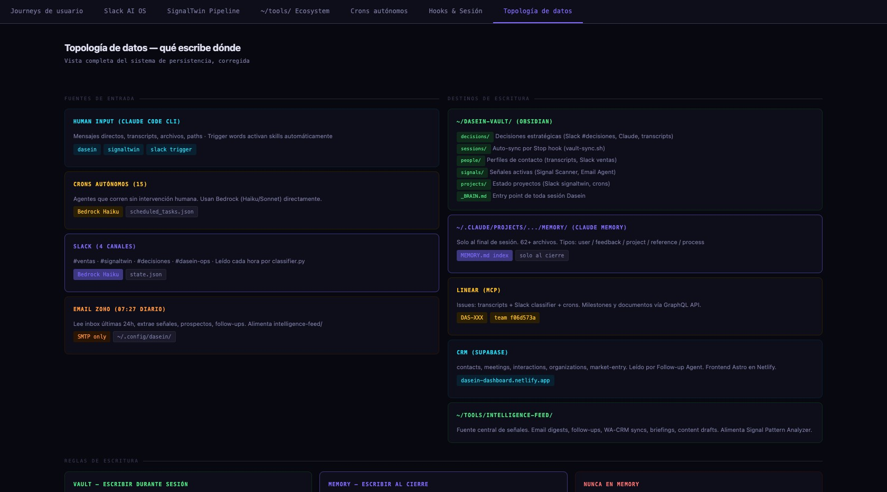

Every role has
an agent.
The OS is structured in layers. At the bottom: data sources (Vault, Supabase, GitHub, Slack, Linear). In the middle: MCP servers that expose these data sources as tools. On top: specialized agents that compose tools into workflows. Coordinating everything: Claude Code as the orchestrator.

AI OS architecture diagram — agents, MCP servers, data sources, hooks, crons

Flow diagram v2 — agent routing, skill dispatch, hook system, memory pipeline
15+ specialists,
zero payroll.
Each agent is a CLAUDE.md file that defines role, tools, constraints, and routing rules. Agents don't share context — they're invoked with specific tasks and return structured output. This prevents context pollution and keeps each agent focused.
Business Agents
- CRM dasein — CRM updates, contact routing
- OPS agente-ops — Linear, blockers, team status
- CFO agente-finanzas — burn, runway, credits
- CTO agente-signaltwin — pipeline, QC, arch
- COMMS chief-of-staff — email triage, replies
Engineering Agents
- BUILD build-error-resolver — TS/build fixes
- REVIEW typescript-reviewer — code review
- PLAN planner + architect — design decisions
- E2E e2e-runner — Playwright test runner
- LOOP loop-operator — autonomous loops
10 servers.
Every data source wired.
The Model Context Protocol (MCP) is Anthropic's standard for giving AI agents tool access. Instead of copy-pasting data into prompts, agents call tools that fetch live data. This means agents always work with current information — not stale context.
I run 10 MCP servers locally, each exposing a different data source as callable tools. Every agent knows which servers it has access to.
Agents that remember
across sessions.
The biggest limitation of LLM agents: they forget everything when the session ends. I built a 3-layer memory system that persists knowledge across days and weeks:
- Claude Memory files — cross-session user/project/feedback/reference notes at ~/.claude/
- MemPalace — 7,960 indexed drawers with semantic search, synced from Obsidian Vault every 2 days
- Dasein Vault — Obsidian knowledge base, the human-editable source of truth
When there's a conflict between sources, Vault wins (most recent, human-verified). Memory files for behavioral rules. MemPalace for fast retrieval.
10 pipelines running
while I sleep.
10 bash scripts scheduled via crontab run autonomously. No cloud scheduler, no Lambda functions — just crontab on my Mac. Each pipeline is a focused agent task with error logging and Slack notifications on failure.
- MON 8AM Gastos Tracker — finance sync
- MON/THU Repo Research — code scout
- EVERY 2D MemPalace sync — Vault → Palace
- DAILY Intelligence feed — signals digest
- NIGHTLY Batch sim runner — overnight sims
- WEEKLY Bible updater — docs refresh
- WEEKLY CRM health check — stale contacts
- DAILY Slack digest — message triage
- WEEKLY Linear cleanup — stale issues
- ON DEMAND Content pipeline — LinkedIn drafts